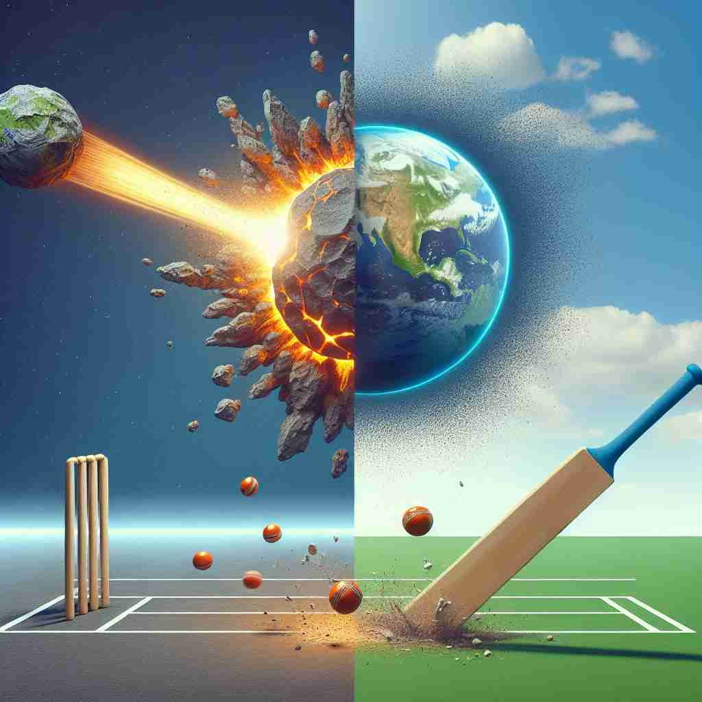

💬 The impact of the asteroid caused a large explosion on the moon. 小行星的撞击导致了月球上的大规模爆炸。

💬 The players will impact the opponent during the game. 选手在比赛中会影响对手。
💬 The hammer will impact the object on the table. 锤子将撞击桌子上的物体。

💬 The impact of the bat sent the ball flying into the sky. 球被球棒击打后飞向天空。
🧠 想象一个物体猛烈撞击另一个物体的场景。这种强烈的物理作用可以帮助你理解 'impact' 的各种含义。无论是实际的撞击，还是比喻性的影响，都带有一种强大、显著的效果。通过联想这种猛烈的撞击画面，你可以更容易记住和理解 'impact' 在不同语境中的用法。
🔈 ['ɪmpækt]
🗝️ v. to hit something with great force 猛烈撞击某物
🎭 在一个棒球比赛中，击球手用力挥动球棒，球以极大的速度撞击在球上，发出清脆响亮的'啪'的一声，展示了'impact'作为猛烈撞击的含义。
💬 The meteor impacted the Earth's surface. 陨石撞击了地球表面。
🌳 由前缀 "im-"（进入，内）与词根 "pact"（击，打）组成。"impact" 意味着某物撞击或影响另一物体，通常指撞击产生的效果。
🕸️ 1. impinge: 冲击，影响 2. import: 进口，意义 3. impulsive: 冲动的
💡 记忆 "impact" 时，可以联想为 "in-"（进入）和 "pact"（击打）的组合，将 "进入的击打" 理解为产生的影响或冲击。想象一个物体撞击另一个物体的场景来帮助记忆。